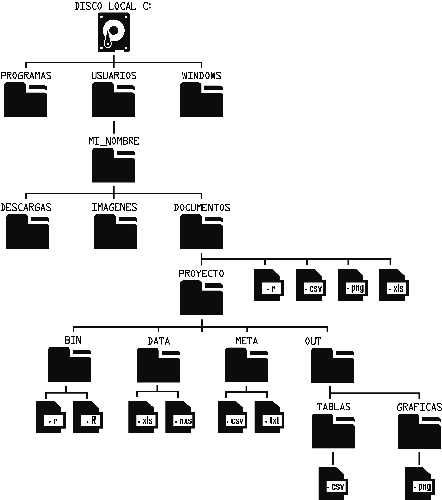

Importar y Exportar Datos
Organización de carpetas
Organizar cuidadosamente la estructura y jerarquización de las carpetas ayudara a facilitar la localización de los archivos, también facilitara el trabajo cuando exista colaboración con otras personas. Si deseas conocer más sobre la importancia de la organización de directorios y datos en un proyecto bioinformático puedes revisar el siguiente link: Reproducibilidad y documentación de análisis bioinformáticos.
Rutas
Con las rutas podemos indicar la localización exacta de un archivo o carpeta, siguiendo una estructura de directorios o árbol de directorios como se muestra en la siguiente figura.
Rutas absolutas
Una ruta absoluta o completa comienza desde la letra del disco local. Por ejemplo, siguiendo la figura anterior la ruta absoluta de la carpeta DOCUMENTOS es: C:/USUARIOS/MI_NOMBRE/DOCUMENTOS/
Rutas relativas
Las rutas relativas dependen del directorio actual en el que se encuentra el usuario. Por ejemplo, si nuestro directorio de trabajo está en la carpeta PROYECTO la ruta relativa al archivo con terminación .png que se encuentra en la carpeta GRAFICAS es: OUT/GRAFICAS/archivo.png
Es mejor utilizar rutas relativas ya que simplifican el código y lo vuelven general.
Directorio de trabajo en R
El directorio de trabajo es la ubicación en el que está trabajando actualmente un programa. Normalmente, este es el directorio de inicio del usuario (en R se hace referencia con ~). Si le pide a R que importe un conjunto de datos de un archivo de texto o guarde un marco de datos como un archivo de texto, asumirá que el archivo está dentro de su directorio de trabajo. Siguiendo el ejemplo de la figura supongamos que el directorio de trabajo de R es la carpeta DOCUMENTOS, esto significa que si queremos importar un archivo debe de estar en esa ubicación y si guardamos cualquier archivo lo hará en esta ubicación.
Seleccionar un directorio de trabajo diferente en RStudio
En RStudio tenemos la opción de cambiar de directorio de trabajo mediante varias opciones. Una de las principales es eligiendo el directorio mediante los comandos Ctrl + Shift + H como se muestra en la siguiente imagen. Las otras opciones dependen de la ubicación de los archivos, al seleccionar estas opciones RStudio cambiara el directorio de trabajo a la ubicación del archivo seleccionado.
Generalmente en un proyecto bioinformático la carpeta BIN o SCRIPTS siempre será el directorio de trabajo. Supongamos que ahora queremos importar un archivo con terminacion .nxs de la carpeta DATA, la ruta relativa es: ../DATA/archivo.nxs
En informática dos puntos seguidos (..) significan un directorio hacia arriba. Por ejemplo, si estamos en la carpeta GRAFICAS y queremos dirigirnos a la carpeta DOCUMENTOS tendremos que subir tres directorios hacia arriba: ../../../
Ubicar y cambiar el directorio de trabajo mediante las funciones getwd() y setwd().
## Ubicar el directorio de trabajo
getwd()
## Cambiar el directorio a la carpeta bin del proyecto
setwd("Documentos/Curso_R/bin/")
## Regresar a home
setwd("~")
Importar y exportar archivos .txt y .csv.
Un archivo de texto simple .txt contiene únicamente texto formado solo por caracteres que son legibles por humanos. Los archivos .csv (del inglés comma-separated values) tienen un formato abierto sencillo para representar datos en forma de tabla, en las que las columnas se separan por comas. Estos dos tipos de archivos tienen la peculiaridad de tener encabezados y presentar separación de caracteres que indican la separación de columnas: pueden estar separadas por comas, puntos y comas, por tabulación, etc.
Para realizar los ejemplor descargar los siguentes archivos: Altura de tallos, Diametro de tallos y Distancia entre costillas.
## Abrir un archivo .txt con la funcion read.table
diam_tallo <- read.table("diametro_tallo.txt")
## Seleccionar la primera fila como encabezados
diam_tallo <- read.table("diametro_tallo.txt", header = TRUE)
## Abrir un archivo .txt con la funcion read.delim
diam_tallo <- read.delim("diametro_tallo.txt")
## Seleccionar qué carácter separa las columnas, en este caso es un espacio
diam_tallo <- read.delim("diametro_tallo.txt", sep = " ")
## Si el archivo tiene un encabezado engañoso tenemos que omitir las líneas hasta llegar a la información de la tabla
## En este caso eliminamos hasta la línea 9
dist_costillas <- read.delim("distancia_costillas.txt", skip = 9, sep = ",")
## Abrir un archivo .csv con la funcion read.csv
alto_tallo <- read.csv("altura_tallo.csv")
## Dado que el archivo no tiene encabezados tenemos que indicar que no tiene
alto_tallo <- read.csv("altura_tallo.csv", header = FALSE)
## También podemos descargar la info directo de la web
alto_tallo <- read.csv("https://raw.githubusercontent.com/cristoichkov/cristoichkov.github.io/master/files/altura_tallo.csv", header = FALSE)
Los objetos de clase data frame y matrix pueden ser guardados en un archivo manteniendo su estructura.
## Crear una matriz 3 x 4
x <- matrix(1:12, 3, 4)
## Guardar la matris en formato .txt
write.table(x, file ="matriz_x.txt")
## Guardar la matris en formato .csv
write.csv(x, file ="matriz_x.csv")